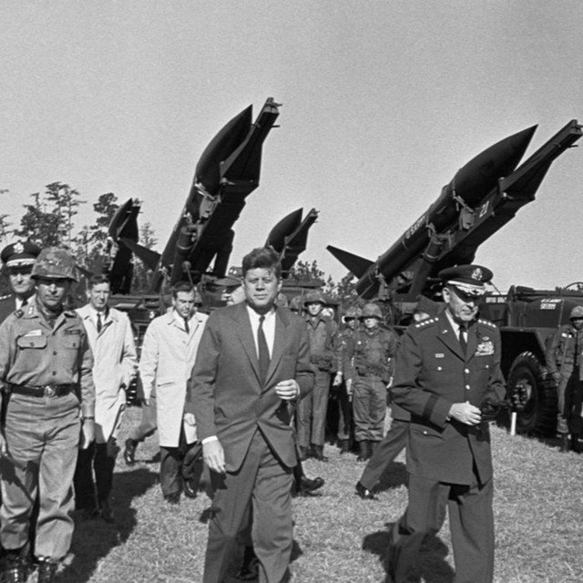
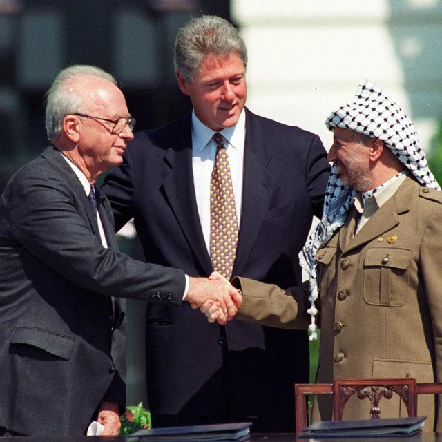
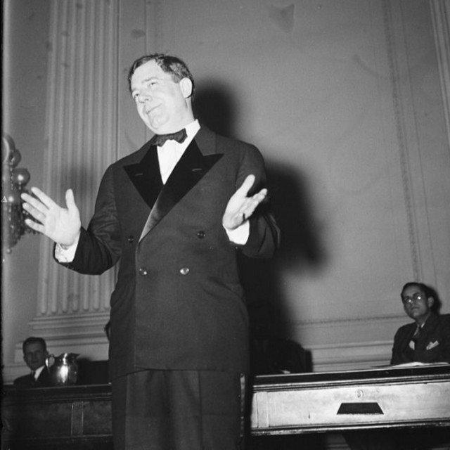
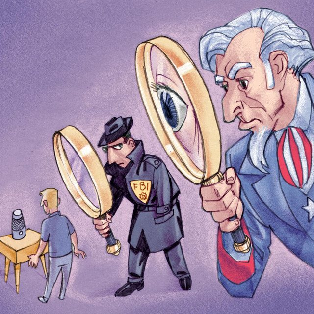

The Eclectic Polymath Podcast · Archive
#076 The Cuban Missile Crisis: How Human Hesitation Saved the World

About this episode
The Cuban Missile Crisis is often remembered as a clean strategic showdown between Kennedy, Khrushchev, and Castro. But the closer you look, the more terrifying it becomes: a crisis shaped as much by confusion, paranoia, miscommunication, and luck as by rational decision-making.
This episode looks at the thirteen days in 1962 when the world came closer than ever to nuclear war. Beneath the famous diplomacy were tactical nuclear weapons already in Cuba, secret backchannels, military pressure, intelligence failures, and near-miss incidents that could have escalated beyond anyone’s control.
Key points
- The Cuban Missile Crisis is often remembered as a clean strategic showdown between Kennedy, Khrushchev, and Castro.
- This episode looks at the thirteen days in 1962 when the world came closer than ever to nuclear war.
- Beneath the famous diplomacy were tactical nuclear weapons already in Cuba, secret backchannels, military pressure, intelligence failures, and near-miss incidents that could have escalated beyond anyone’s control.
- We get into Black Saturday, the submarine standoff, the stray pilot, the hidden U.S.-Turkey missile bargain, and the role of human hesitation in preventing catastrophe.
More like this

#128 The Oslo Accords: Israel, Palestine, and the Architecture of a Failed PeaceAugust 15, 202651:49 #129 The Yom Kippur War: Israel, Egypt, and the Shock That Changed the Middle EastAugust 15, 20261:03:35
#129 The Yom Kippur War: Israel, Egypt, and the Shock That Changed the Middle EastAugust 15, 20261:03:35
#123 Huey Long: Populism, Power, and the Making of an American AutocratAugust 13, 202656:37
#124 The PATRIOT Act: 9/11, Surveillance, and the Expansion of American PowerAugust 13, 20261:06:19